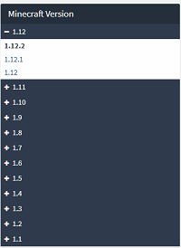
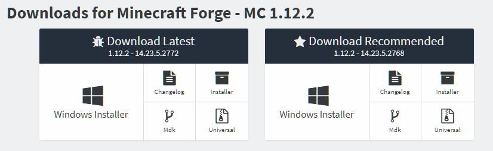

You can find the latest download for eclipse at eclipse.org/downloads/packages/. Once you have found and downloaded the Eclipse IDE For Java Developers you should save it to a location where you are going to be able to open it later.
 The next step is going to be getting the Forge files for the mod so start by going to files.minecraftforge.net. On the left side you will see a dropdown for the different Forge versions. Make sure that you select either 1.12, 1.12.1, or 1.12.2 as those are the versions that all the programming tutorials are on.
 Once you have selected the version you are going to be making your mod in you will see two boxes for either the Latest or Recommended version. You can select whichever one of the two you would like your mod to be in. Once you decide which you are using click and download the MDK.
After you have downloaded the proper files for the Forge version you are using you should create a new folder where ever you are going to be keeping your mods EX: (C:/Users/SoggyMustache/Documents/Mods/TutorialMod) and transfer the files from the ZIP you downloaded from forge into your project folder. After that you will want to open either Windows PowerShell or the Command Prompt in the folder location and run the following commands
gradlew setupDecompWorkspace eclipse
for the Command Prompt
or
./gradlew setupDecompWorkspace eclipse
for the Windows PowerShell
These commands can take quite a while to run especially if its your first time so be patient!
Once the two commands have run you can open the Eclipse program that you downloaded earlier and the below popup (or similar) will appear
When you see the popup you should either type in the path to project folder making sure that it ends with \eclipse or select Browse and navigate to the project again selecting the eclipse folder. After the path is properly selected you can click the Launch button and you will be ready to start actually putting code into your mod.